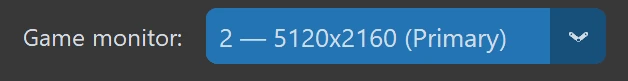
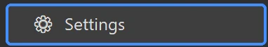

First-time Setup
Pick your game monitor
Select the monitor your game is on from the Game Monitor picker (top-right), and run the game in Borderless or Windowed mode.

Templates are built in
Detection templates for Race, Buy and Auto Wheelspins ship built in and auto-scale to your resolution — nothing to capture, they work out of the box.
Appearance & language
In Settings you can switch language (中文/English), theme and UI scale, and rebind hotkeys (default F9 start/stop, F12 report, F10 overlay).

Only exception: Unlock Wheelspins grid
The one thing you set up is Unlock Wheelspins: in its panel, use the unlock-path grid to mark which mastery-tree nodes to unlock, and the garage block to pick the range of cars (first row, middle full columns, last row). No node capture or templates needed — see Part 3.
Ready to go
Everything else works without setup. Open the function you want and press ▶ Start or F9.